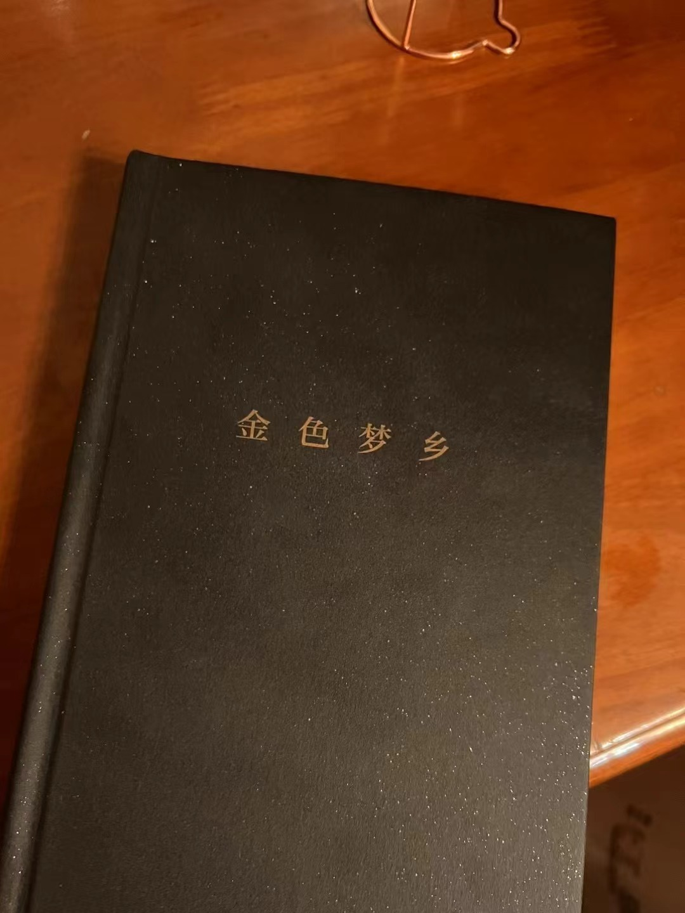

2023年阅读记录
2023年读的一些书
《祥瑞：王莽和他的时代》
这本书从汉朝儒学的发展为索引，讲述了汉朝建立到王莽篡位建立新朝、又旋即覆灭的过程。
汉朝是首个由平民建立的朝代。因为不能再由“皇帝继承了圣人的血脉"来解释“为什么是我做皇帝”“为什么你们不能谋反”，汉朝皇帝们将儒学发展为具有汉朝特色的儒教，利用五德终始、春秋决狱、谶纬之学等各种儒家理论来建立自己的神圣性。 源自秦朝的法家刑罚，加以一层儒教德治的包装，就构成了“汉家自有制度，本以霸王道杂之”的执政纲领。
虽然在一开始，皇帝们深知“实践与理论是两张皮”，但是承平日久，作为表象的儒教理论渐入人心，反而成为了对于皇帝们具体执政时的掣肘。而当儒学大家、平民百姓都在期待“五百年有圣人出”，憧憬着一个符合理论标准的哲人王，一个迎合人们期望的野心家的出现也成了必然。
作为外戚出身的王莽，天生享有各种特权，但是与其他外戚贵族不同，王莽诚心求学，一言一行都谨遵礼教，因此备受世人认可。随着个人的奋斗与时代的进程，以cosplay孔子出道，又通过扮演周公掌权的他，再加上各路大儒制造祥瑞来为其摇旗呐喊、虚张声势，通过复现圣人时代的巅峰“禅让”，终于成功突破各种制度，成为了事实上的皇帝。
但这到底是王莽对典籍中圣人的拙劣模仿。首先，他并没有实际的执政理念和目标，也就没有坚定的态度去进行对抑制土地兼并、降低赋税徭役这种可以延长封建王朝寿命的标准操作。而且，骗了世人也骗了自己的他，已经被架在“哲人王”的台子上下不来了。正是因为缺乏合法性，更是要对经书亦步亦趋；正是因为政权不稳，更是需要处处“天降祥瑞”。因此，哪怕是看到了存在哪些实际问题，也没人敢于指出；哪怕是已经走在下坡路上，也更要拧死油门。最终，他的王朝很快覆灭。
联想到今天，为了蝇营狗苟，各路”砖家“会提出各种奇葩言论来曲意逢迎，但是这些高大上的”理论“终究辩论不过每个人生活中猪肉涨价，薪资降低这种”小事情“。王莽的新朝在诞生时，大儒们口中那些欺瞒人心的理论终究是虚妄的；但是新朝死去的时候，民不聊生、天下动荡是真实的。真就是一切历史都是当代史。
但是这本书可读性较差。东一榔头西一棒子。讲着讲着突然出现一个新人物新事件，然后下一章再猛然倒回三四十年前，从这个新人物\新事件的起因又开始讲起。可读性较差！
《东晋门阀政治》
去年看了刘勃的《世说俗谈》，然后这本《东晋门阀政治》是作为引申的阅读来看的。后面准备继续看一些两汉魏晋南北朝的东西，来构建一个完整的认知。
曹丕篡位后，司马炎再次篡位。“忠”已经是碰都不能碰的滑梯之后，给历史留下了“伏惟圣朝以孝治天下”的笑柄。西晋八王之乱后，司马睿避乱渡江，与王氏家族埋在这边的伏笔一起建立了东晋。
但是这段历史是真的乱，所以想说东晋，首先要从西晋讲起。但是出现在西晋舞台上面的人物，家世往往又要上追到汉朝。本来清晰的历史脉络，经过一次改朝换代就打乱一次，经过一次改朝换代就打乱一次，到东晋建立的时候已经是一团乱麻。早早南下避乱的魏晋士族、传承自东吴的
因为晋朝得国不正，所以皇帝就很难集权，反应到政治上，就是贵族门阀更有参与度；反应到文化上，就是文人雅士更能专注于表达自我；也就是说晋朝和汉朝相比，看起来是进步的，实际是退步的。所以，看文人雅士段子集的《世说新语》，就轻松简单加愉快；看分析政治的《东晋门阀政治》，就很难读。而且感觉里面的人充满了私欲和苟且。
《一百年，许多人，许多事》
本书是杨苡的口述自传。一个北洋金融巨子的子女们，在时代变迁、政坛风云变幻、硝烟四起的大背景下，在自己的成长过程中能够任性地做各种事情，不断有人兜底，最终还能因为国内人才的匮乏，以及超出时代的洋文素养（当然喽），成为一代翻译名家，真是让我辈小镇做题家羡慕。
去年看过曾志的《一个革命的幸存者》，在这里先介绍一下。这是老一辈无产阶级革命家曾志晚年在病榻上以回忆录的形式写成的一部自传，也是她有生之年写成的最后一本书。
因为两位作者基本处于同一个时代，所以两本书的对比阅读也很有意思。1930年，11岁的杨苡在天津租界的杨府，因为自己一个人睡一个房间害怕时，18岁的曾志已经经历了地方的武装斗争、地下斗争，上了井冈山；1934年，为杨府大公子排解心情，杨苡的母亲带着大家去北京香山别墅消夏避暑时，曾志在闽东苏区感染了疟疾，高烧不止；1943年，蒋介石成为中大校长，杨苡和同学们因为校长演讲时的“下江人口音”感到滑稽时，曾志的两任丈夫已经先后死在国民党反动派的手中了。
《一个革命的幸存者》中，有时代的沧桑，革命的痛苦和昂扬的斗争；《一百年，许多人，许多事》的主人，因为自己的母亲做小妾受的委屈忿忿不平，为错过了和巴金弟弟的缘分而遗憾终身。
《邓小平时代》《他改变了中国：江泽民传》
我之前并没有看过政治家传记类的书。这两本书是第一次看名人传记，尤其是两位传主连续的决策塑造了我们的时代，并延续至今。
在他们的时代里，他们都做了他们觉得很重要的事情，出于高尚的目的。但是距离我们太遥远了。我觉得，所谓政治，在伟人的挥斥方遒和街头象棋摊光膀子爷叔的龙门阵之间，应该还有好几个层级，但是，并没有。这就和出租车司机知道各种红墙秘辛，却不认识代表自己的人大代表，不认识自己小区的业委会成员一样荒谬。
这两本书是在Kindle上看完的。看完之后，用了五年多的Kindle也接近报废了--电池很不行了。
《金色梦乡》《华丽人生》...
今年在看完《有顶天家族》之后，大概上，森见登美彦的书都看完了。然后，一刻也没有为森见登美彦而感伤，立刻列入阅读计划的就是伊坂幸太郎。首先看的是他的代表作，《金色梦乡》与《华丽人生》。《金色梦乡》是一个被诬陷袭击首相的人的逃脱之旅，《华丽人生》是五个人如同迷宫一样相互牵连的回环一般的命运。另外看的《杀手届》《阳光劫匪》啥啥的，好像写的不是很好，也不值得放在标题上标榜自己看过了。总之明年应该也不会再看伊坂幸太郎的书了。
森见登美彦是很有才气的小说家，诸多作品中都流露出废宅味的青春气息，但是时不时也能会人看到他写作的随意和敷衍。但是伊坂幸太郎的才气用在了完全不同的方向：POV视角的设计，如同蜘蛛网一样的精巧剧情架构，以及意料之外情理之中的反转。给人的感觉就是他在盯着你说：“通俗小说写作，我是认真的”。
我觉得小说分两种，也对应了两种小说家。一种是以文载道类型的，类似于电影中的“作者电影”的概念，作家更倾向描述于自己的人生体验，世情的洞察，人性的幽微这种；另一个就是，“小亮，给他整个活儿！”类型的，别管深不深沉，你就说好不好看吧这种。所以可能就作者的B格而言，伍尔夫、加缪、黑塞、卢梭 > 托尔斯泰、陀思妥耶夫斯基、巴尔扎克 > 马伯庸等其他通俗小说作者。
但是说到底，小说中就是小说。打开小说的目的也就是图一乐，不会真的有人指望从小说里学东西吧？
最后
2023年是发生了很多人生大事的一年，所以并没有多少时间看书。研究生毕设、婚礼、买房、毕业答辩、蜜月旅行、入职、搬家、培训、转正。今年是奋斗、收获的一年。
马克思说过一句名言，也就是镌刻在马克思墓碑上的那句话：“哲学家们只是用不同的方式解释世界，问题在于改变世界”。我想，看书终究是消遣。明年可能也没有多少时间看书。但是如果可以的话，希望我过去看过的所有的书，给我力量，铸我神与心，让我能在现实生活中，走得更稳一点，更沉着一点。